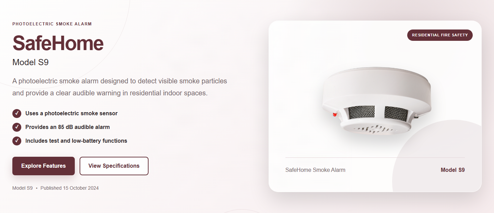
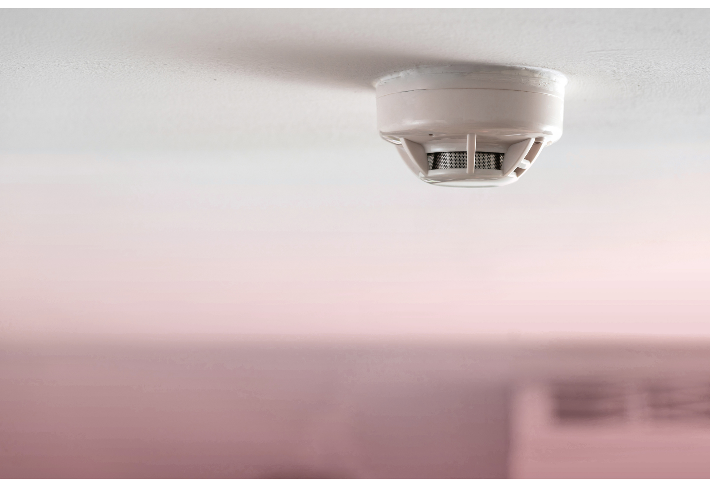
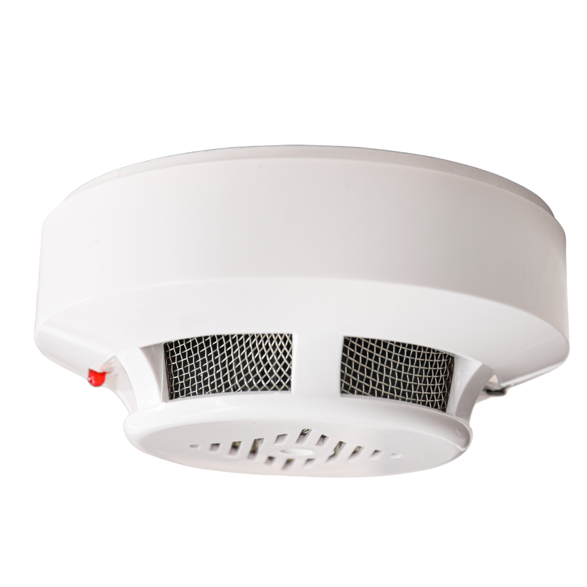

Photoelectric smoke sensing
The optical sensing chamber is designed to detect visible smoke particles entering the alarm housing.

Credentials applied with: Adobe Content Authenticity
Asset type: PNG image with embedded Content Credentials
Credential location: Embedded in the asset file
Last verification: Passed on 19/11/2026 using Content Credentials Verify
Verify Content CredentialsCredentials applied with: Adobe Content Authenticity
Asset type: PNG image with embedded Content Credentials
Credential location: Embedded in the asset file
Last verification: Passed on 19/11/2026 using Content Credentials Verify
Verify Content CredentialsEarly warning for residential spaces
EmberLane SafeHome S9 is a battery-powered smoke alarm designed for installation in suitable residential indoor locations.
The photoelectric sensor monitors the surrounding air for visible smoke particles and activates the audible alarm when the programmed alarm threshold is reached.
SafeHome S9 includes an 85 dB alarm, a test button, a low-battery warning and a status indicator for routine inspection and maintenance.
Product highlights
SafeHome S9 combines photoelectric sensing, an audible alarm and straightforward testing functions in a compact ceiling-mounted unit.
The optical sensing chamber is designed to detect visible smoke particles entering the alarm housing.
The integrated sounder produces an alarm level of at least 85 dB when measured at a distance of three metres.
The front test button allows the user to check the battery, electronic circuit and audible sounder.
The alarm emits a periodic warning chirp when the installed battery is approaching the end of its operating life.
The indicator light communicates normal operation, testing and alarm conditions through defined flash patterns.

Designed for residential use
Install SafeHome S9 on a suitable ceiling or wall location according to the supplied placement guidance, secure the mounting plate and test the alarm before relying on it for routine monitoring.
The mounting plate attaches to the selected surface before the alarm body is rotated securely into position.
The front button supports regular functional testing without requiring the alarm housing to be opened.
Replace the battery when the low-battery warning begins and test the alarm immediately after replacement.
Recommended testing frequency
Press and hold the test button once every week until the alarm sounds, and also test the unit after installation, battery replacement, cleaning or an extended period away from the property.
Product details
Key product information for the EmberLane SafeHome S9 photoelectric smoke alarm.

| Product name | SafeHome |
|---|---|
| Model | S9 |
| Product category | Residential smoke alarm |
| Sensor type | Photoelectric smoke sensor |
| Alarm output | At least 85 dB at 3 m |
| Power source | Replaceable 9 V alkaline battery |
| Test function | Front test button |
| Battery warning | Periodic low-battery chirp |
| Status display | Red LED indicator |
| Recommended testing | Once every week |
| Installation | Ceiling or suitable wall location |
| Product dimensions | 110 × 110 × 38 mm |
| Product code | EL-S9-2026 |
Getting started
Complete the following steps during installation and routine operation.
Connect the specified 9 V battery and place it securely inside the battery compartment.
Secure the mounting plate at a suitable location and rotate the alarm body firmly into position.
Press and hold the test button until the alarm sounds and confirm that the indicator operates correctly.
Test the alarm weekly, remove surface dust regularly and replace the battery when the warning chirp begins.
Important information
Follow these precautions when installing, testing, cleaning or storing SafeHome S9.
Remove the battery and store an unused alarm in a cool and dry indoor location protected from dust, moisture, paint, solvents and physical damage.
Questions and Answers
Find answers about SafeHome S9, including testing frequency, photoelectric sensing, alarm output, battery warnings and routine maintenance.
SafeHome S9 should be tested once every week by pressing and holding the test button until the alarm sounds.
SafeHome S9 uses a photoelectric sensor designed to detect visible smoke particles entering its optical sensing chamber.
The integrated sounder produces an alarm level of at least 85 dB when measured at a distance of three metres.
The alarm emits a short periodic chirp when the installed battery is approaching the end of its operating life.
Remove surface dust with a soft brush or suitable vacuum attachment without opening, washing or painting the alarm.
SafeHome S9 is manufactured and distributed by EmberLane.